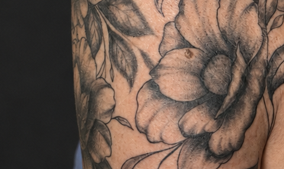
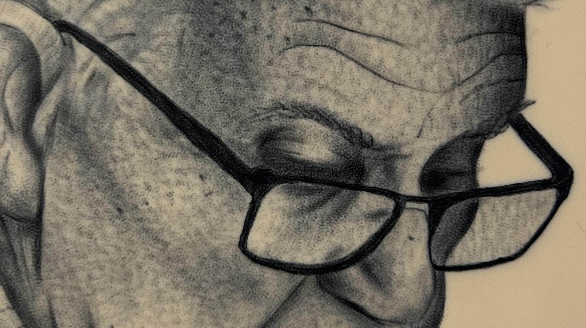
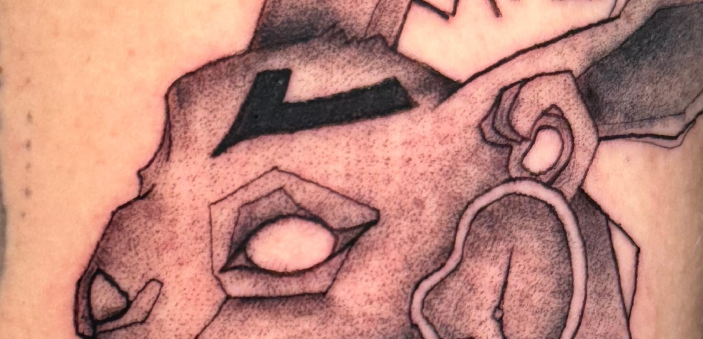

Blackwork · Anime · Realismo B&G
Hola, soy Danju
Soy tatuador ubicado en Benimaclet, Valencia. Trabajo diseños en negro con estética anime, japonesa, blackwork y realismo black and grey.
Saber más
Portfolio
Aqui puedes ver mi trabajo
Una selección de tatuajes y diseños realizados en blackwork, anime y realismo black and grey, entre otros.

Floral blackwork
Proyecto floral
Media manga botanica

anime
Rock Lee
Anime: Naruto

Realismo
Retratos realistas
Prácticas de realismo

Diseños
Diseños disponobles
Inspirados en Studio Ghibli

Blackwork
Blackwork
Varios tatuajes con tecnica blackwork.